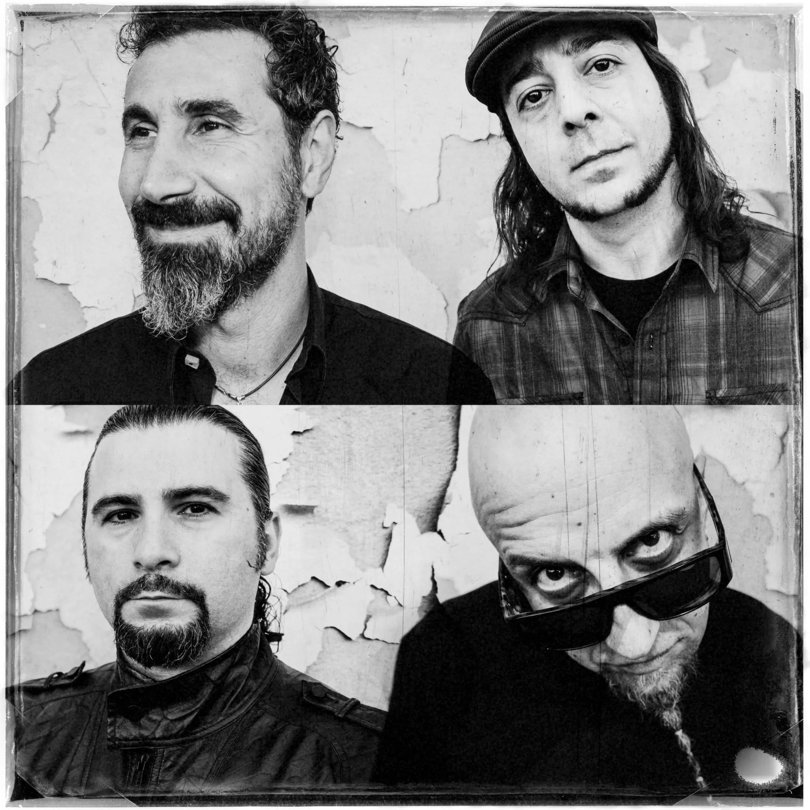
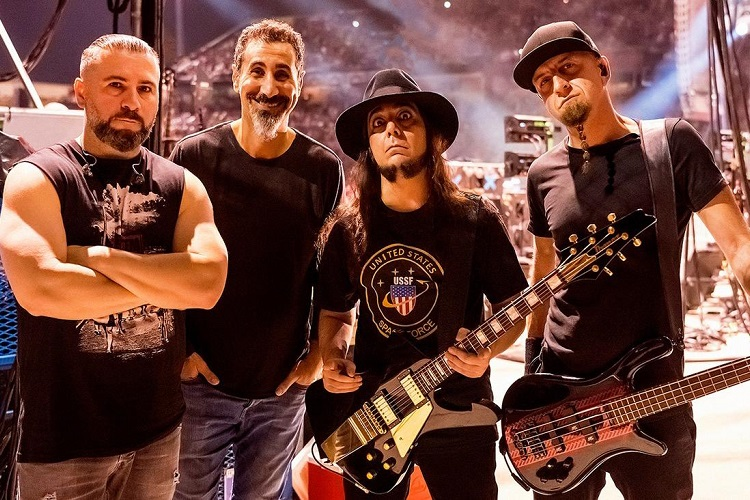
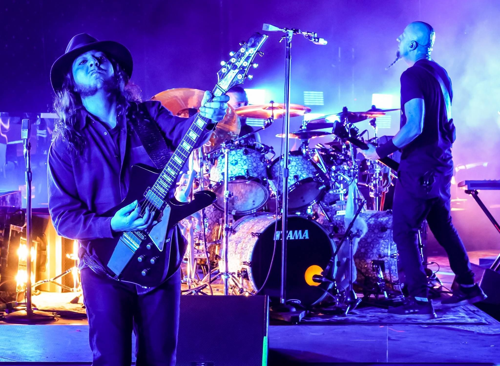
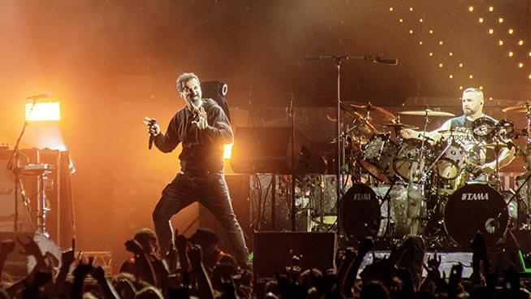

Išgirskite mėgstamiausius hitus, kaip:
"Chop Suey!" | "Toxicity" | "B.Y.O.B." | "Aerials" ir daugelį kitų!
Jų energija scenoje ir unikalus skambesys nepalieka abejingų, todėl šis koncertas – nepakartojama patirtis tiek ilgalaikiams fanams, tiek naujai atradusiems šią išskirtinę grupę.




System of a Down – tai armėnų kilmės amerikiečių alternatyviojo metalo grupė, susikūrusi 1994 metais Los Andžele. Grupė garsėja unikaliu muzikos stiliumi, kuriame maišomos metalo, roko, alternatyvios muzikos, bei armėniškos kultūros įtakos. Grupės nariai – Serj Tankian, Daron Malakian, Shavo Odadjian ir John Dolmayan.
Serj Tankian, System of a Down vokalistas, savo interviu dažnai pabrėžia, kokią svarbią vietą jo gyvenime užima gerbėjai. Jis dėkingas už jų palaikymą ir supratimą, vertina bendruomenės sukurtą ryšį per muziką. Serj teigia, kad gerbėjų aistra ir atsidavimas ne tik įkvepia kurti, bet ir primena, kodėl svarbu išlaikyti nuoširdumą ir drąsiai kalbėti apie tai, kas iš tikrųjų rūpi. Pasak jo, gerbėjai yra pagrindinė priežastis, kodėl System of a Down muzika pasiekia tokią platų klausytojų ratą visame pasaulyje. (Žemiau pateiktos trumpos ištraukos iš interviu.)